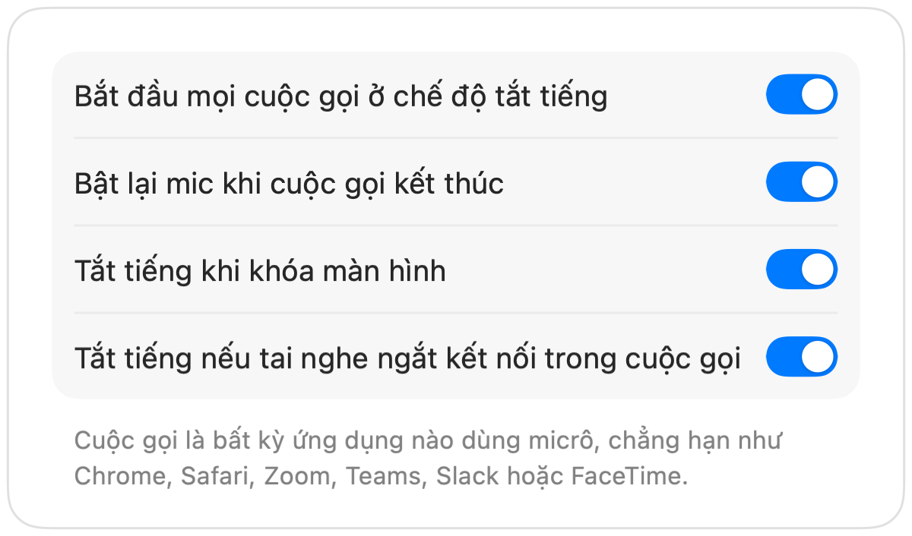

Cách tắt tiếng Microsoft Teams bằng AirPods trên Mac
Phím tắt Command-Shift-M của Teams chỉ dùng được khi cửa sổ Teams đang hoạt động. Trong cuộc họp, bạn thường phải xem tài liệu, duyệt web hoặc chia sẻ màn hình khác.
Muffle giúp bạn tắt tiếng micrô từ bất kỳ đâu, áp dụng cho cả ứng dụng Teams lẫn Teams trên web. Hãy nhấn AirPods, dùng một phím tắt duy nhất hoặc nhấp vào thanh menu.
Tắt tiếng Teams từ bất kỳ đâu
- 1
Cài đặt Muffle và cho phép truy cập micrô.
- 2
Tham gia cuộc họp Teams của bạn.
- 3
Nhấn Control-Option-M hoặc thân AirPods để tắt tiếng. Biểu tượng trên thanh menu sẽ chuyển sang màu đỏ.
- 4
Nhấn lại lần nữa để bật tiếng, hoặc giữ phím tắt để nói chuyện khi đang tắt tiếng.

- Teams trên tab trình duyệt cũng được hỗ trợ AirPods tương tự như Google Meet thông qua Muffle.
- Bật “Tắt tiếng khi khóa màn hình” để micrô không bao giờ bị hở khi bạn rời khỏi máy tính.
Câu hỏi thường gặp
Thao tác nhấn AirPods có hoạt động trong ứng dụng Teams không?
Điều này tùy thuộc vào phiên bản Teams, vì Teams có thể tự xử lý thao tác nhấn đó. Phím tắt và nút trên thanh menu của Muffle luôn hoạt động trong mọi trường hợp.
Teams có hiển thị là tôi đang tắt tiếng không?
Không phải lúc nào cũng vậy. Muffle trực tiếp tắt tiếng micrô, nên Teams có thể vẫn hiển thị micrô đang bật dù mọi người đều không nghe thấy âm thanh nào.